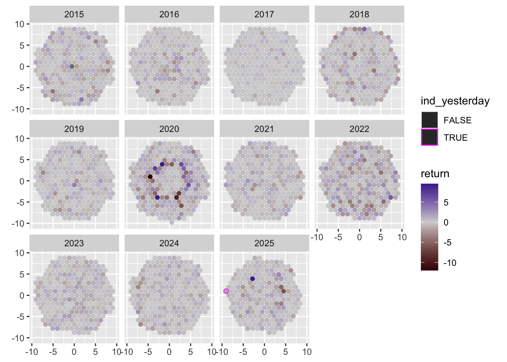
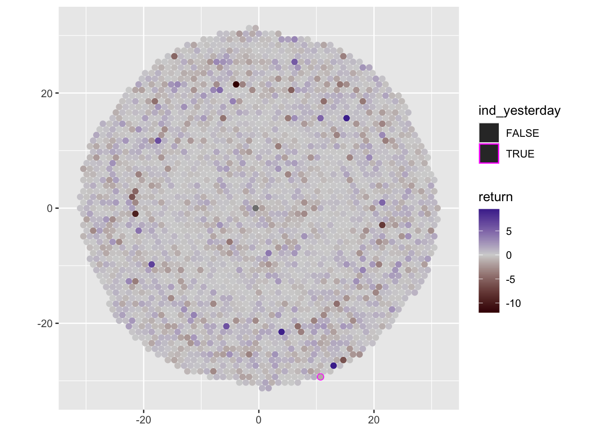
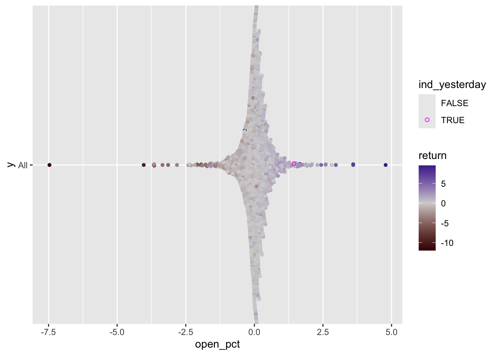
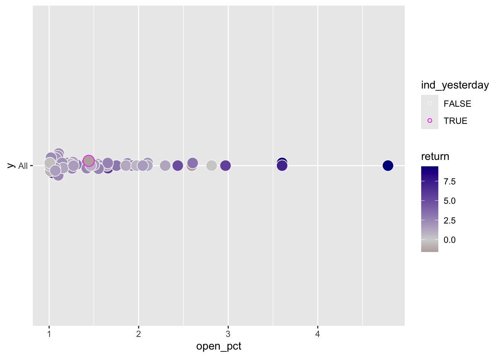
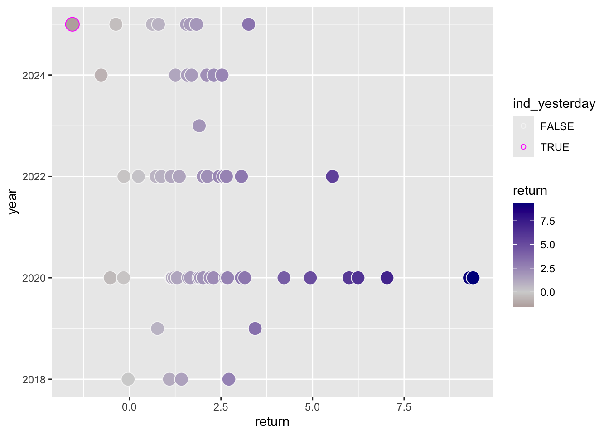
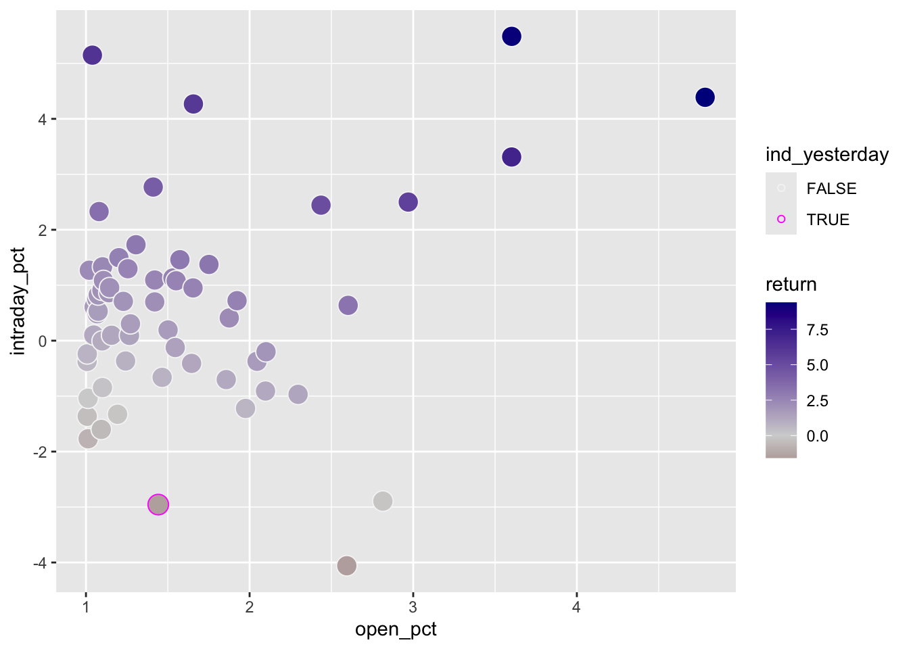

# this block from an ellmerXgemini
library(tidyquant)
library(dplyr)
library(lubridate) # For today()
# --- 1. Define Parameters ---
symbol <- "^GSPC" # S&P 500 Yahoo Finance symbol
start_date <- "2015-01-01" # Corrected from 20215
end_date <- "2025-11-21"
# --- 2. Load Data ---
# tq_get fetches financial data
sp500_data <- tq_get(symbol,
get = "stock.prices", # Specify we want stock prices
from = start_date,
to = end_date)Conversational ggplot2: easily and elegantly recording and communicating visual trains-of-thought with your favorite graphing library
Replicating ‘Visualizing-Why-Yesterdays-Stock-Market-reversal-was-so-weird-and-unnerving’ by David Crowther
Intro Thoughts
ggplot2 is noted for its ability to create stunning visualizations with relative ease given its elegant design and intuitive syntax. Maintainer Thomas Lin Pedersen has compared the ggplot charting experience as akin to ‘speaking your plots into existence’ and practitioners often celebrate how they arrive a final polished plots via incremental adjustments, i.e. combining snapshots of unfinished plots to help others appreciate the evolution.
Not generally discussed is the fact that ggplot2’s incrementalism might assist in taking people through involved trains-of-thought, again in a way that is strikingly easy, and which uses code that is extraordinarily concise and clear to read and reason about. The exercise below, a replication of a recent visual media article, explores this potentially powerful conversational character of ggplot2 with native capabilities and the experimental ggplyr package, created to allow for greater ease of movements between plots. It also uses more traditional layer extensions from ggcirclepack and ggbeeswarm extensions. We reproduce the static charts of the news item alongside the natural language (prose) used to describe the viz moves and interpretation of the charts. The conciseness and intuitiveness of the code required to move between plots and match natural language is pretty extraordinary stuff (so elegant!).
Additional vars
sp_500_data_calcs <-
sp500_data |>
mutate(
year = year(date),
return = (close - lag(close))/lag(close)*100,
open_pct = (open - lag(close))/lag(close)*100,
intraday_pct = 100*(close-open)/open,
ind_yesterday = date == "2025-11-20"
)Experiment
https://sherwood.news/markets/visualizing-why-yesterdays-stock-market-reversal-was-so-weird-and-unnerving/
# remotes::install_github("https://github.com/EvaMaeRey/ggplyr")
# remotes::install_github("https://github.com/EvaMaeRey/ggcirclepack")
library(tidyverse)
library(ggplyr)
library(ggcirclepack)
library(RColorBrewer)Viz exploration move: Every dot here represents one day of the S&P 500 Index’s return.
aes(id = date) + geom_circlepack()
sp_500_data_calcs |> head()# A tibble: 6 × 13
symbol date open high low close volume adjusted year return
<chr> <date> <dbl> <dbl> <dbl> <dbl> <dbl> <dbl> <dbl> <dbl>
1 ^GSPC 2015-01-02 2059. 2072. 2046. 2058. 2708700000 2058. 2015 NA
2 ^GSPC 2015-01-05 2054. 2054. 2017. 2021. 3799120000 2021. 2015 -1.83
3 ^GSPC 2015-01-06 2022. 2030. 1992. 2003. 4460110000 2003. 2015 -0.889
4 ^GSPC 2015-01-07 2006. 2030. 2006. 2026. 3805480000 2026. 2015 1.16
5 ^GSPC 2015-01-08 2031. 2064. 2031. 2062. 3934010000 2062. 2015 1.79
6 ^GSPC 2015-01-09 2063. 2064. 2038. 2045. 3364140000 2045. 2015 -0.840
# ℹ 3 more variables: open_pct <dbl>, intraday_pct <dbl>, ind_yesterday <lgl>sp_500_data_calcs |>
ggplot() +
aes(id = date) +
aes(color = ind_yesterday) +
aes(fill = year |> as_factor()) +
aes(linewidth = I(.3)) +
geom_circlepack() +
coord_equal() +
scale_fill_manual(values = brewer.pal(8, "Dark2")[c(1:8, 1:3)]) +
scale_color_manual(values = c("transparent", "magenta"))
Viz exploration move: Here are those days, colored by the return on that day.
aes(fill = return)
last_plot() +
aes(fill = return) +
scale_fill_gradient2(mid = "lightgrey", low = "#410000", high = "darkblue")
Reflection: Even from a glance, you can see the volatility …
Viz exploration move: … of the pandemic era, as well as the bear market of 2022.
facet_wrap(~ year)
last_plot() +
facet_wrap(~ year)
Reflection/viz move: Although there have been worse days, (
facet_null()to return to 10-year context)
last_plot() +
facet_null()
Forshadowing: …what was remarkable about yesterday was how the good mood soured.
Viz exploration move: Here are all of the days again, this time arranged by how much the S&P 500 opened up in its very first trade of the day.
aes(x = open_pct) + geom_beeswarm()
last_plot_wipe_last() + # last plot - and remove geom_circlepack
aes(y = "All", x = open_pct) +
ggbeeswarm::geom_beeswarm(shape = 21) +
coord_cartesian()
Viz exploration move: … but now let’s only show the days when the S&P 500 Index opened up more than 1%.
data_filter(open_pct > 1)
last_plot() +
data_filter(open_pct > 1) + aes(size = I(5)) +
scale_color_manual(values = c("whitesmoke", "magenta"))
Reflection: Such a good mood at 9:30 a.m. ET is pretty rare — only on 61 occasions out of 2,739 days did the market open up >1%.
Most of the time, stocks held onto that strong start throughout the day to finish with a gain; hence why most of the dots here are blue — but there are two notable outliers.
aes(x = return)
last_plot() +
aes(x = return)
Viz exploration move/reflection: Both of those anomalies happened in 2025 (
facet_grid(year~.)helps us look year-wise), and one of them was yesterday, when stocks opened up nearly 1.44%, only to slide nearly the entire session, closing down 1.56%.
last_plot() +
aes(y = year)
All told, the SPX Index slid ~3% intraday. That’s only happened a handful of times in the last decade after opening up more than 1% — one of the others being the market’s tariff-induced meltdown in April.
last_plot() +
aes(y = intraday_pct, x = open_pct) 